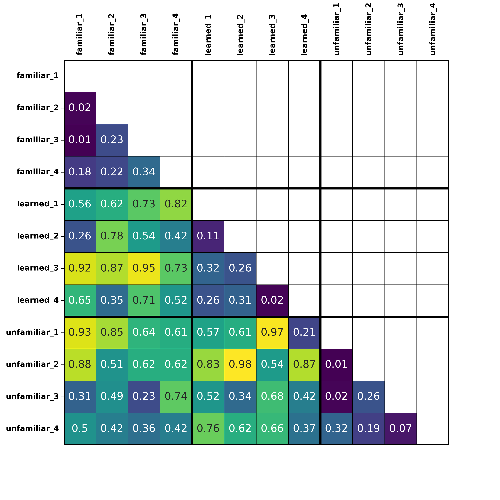

Option 1: Constructing a hypothetical model
In this approach, a hypothetical model is constructed that details how different stimuli/conditions are expected to be
related to each other. That is, we construct a matrix of all of our items in our experiment, and make hypothetical pairwise
comparison predictions about how similar/dissimilar a pair of items should be. We can then see how well this model (also known
as a representational dissimilarity matrix/RDM) correlates with observed neural dissimilarity in each region of the brain we are
interested in. This approach can be particularly useful when wanting to test competing accounts of how information might be represented
in the brain.
Example
In our research, we were interested in decoding regions of the brain sensitive to speaker identity. To do this, subjects actively
attempted to recognise three voices whilst lying in an MRI scanner. One was the voice of a friend or romantic partner,
one was a learned voice, and the last voice was unfamiliar.
We constructed a hypothetical model that predicted that pairwise comparisons of within-talker items (two different utterances from
the same speaker) should show lower dissimilarity (a.k.a. higher similarity) than pairwise comparisons of between-talker items
(two utterances from different speakers).
Hypothetical RDM
In the prediction RDM above, the matrix is filled with values predicting dissimilarity based on talker identity. Colours show values,
where low numbers indicate low dissimilarity (aka high similarity), and higher numbers indicate high dissimilarity (aka low similarity).
Here, we are predicting that regions sensitive to talker identity will show these patterns. Note that the matrix is symmetrical about the
diagonal so we only filled out the bottom half.
Comparing the hypothetical model to the observed neural data
Using the brain data, a matrix similar to the hypothetical model is constructed, which we will call the observed neural dissimilarity matrix (or brain RDM).
Each cell of this matrix is filled with a dissimilarity value (in our case a correlation co-efficient), which reflects the similarity between the neural
pattern associated with one item and every other item in the matrix (pairwise comparisons).
A brain RDM is then computed for every voxel (a 3D cube of brain tissue) location we are interested in in the brain. This can either be computed for the whole
brain, or for specific regions of interest (ROIs), depending on whether you as a researcher have specific predictions about brain regions that may be involved
in the cognitive process of interest.
For our example, as we were interested in representations of identity in the brain, we took a searchlight region of interest approach, using regions identified
in a previous study to be involved in voice, face, and person perception.
Figure taken from Tsantani et al. (2019), NeuroImage, doi: https://doi.org/10.1016/j.neuroimage.2019.07.017
In practice, a brain RDM was then constructed from neural patterns extracted in turn from
each voxel and its surrounding neighbourhood of voxels (the size of which we specify), and this is repeated in each region of interest.
 Observed neural dissimilarity matrix (brain RDM), with correlation values showing dissimilarity in neural patterns of activity for each pairwise comparison. This would be a matrix example from one searchlight location in the region of interest mask.
Single-subject Analysis
The brain RDM is then correlated with the prediction RDM at each searchlight ROI using Pearson's correlation coefficient. Correlation values express how well the prediction RDM
characterised the observed neural dissimilarity in response to speech across the same and different identities.
This analysis is repeated for each of the subjects in the experiment, and a correlation map is calculated for each subject, containing a single correlation value at each searchlight location.
Group-level Analysis
So, from each participant, we now have a map of correlation values at each brain region included in our analysis. These correlation values show us how well our hypothetical model (prediction RDM)
characterised the observed neural dissimilarity in response to speech across the same and different identities, at each brain region studied.
At the group-level, these correlation maps can be analysed by conducting one-sample t-tests at each voxel location to determine whether correlations significantly differed from zero in the group. Because there are many voxel locations, we are
running lots of one-sample t-tests. Therefore, to correct for multiple comparisons, we use something called "Threshold Free Cluster Enhancement" or TFCE, which adjusts for multiple comparisons.
Significant clusters in our example would indicate brain regions that differentiate between different identities (lower similarity) but show consistencies in response to variable instance of the same identity (higher similarity), which is what our prediction model depicts.
This gives us insights into brain regions that are sensitive to vocal identity information.
Option 2: Compare Observed Neural Dissimilarity directly
In this approach, instead of conducting an a priori model RDM (prediction model), we directly compare observed neural
dissimilarity across different parts of our model that we are interested in. We just don't make specific predictions about
the dissimilarity values in each cell of our matrix.
Example
We are still interested in finding regions that are sensitive to speaker identity, and expect that such regions will show lower
dissimilarity (higher similarity) when hearing different instances of the same speaker (telling together), and higher dissimilarity
(lower similarity) when hearing instances of two different speakers (telling apart).
So if we were to construct an RDM, we can specify the parts of the matrix we are interested in comparing.
RDM showing the different parts of the matrix we are interested in comparing in the brain data. Purple squares = within-identity or "telling together" comparisons, Yellow squares = between-identity or "telling apart" comparisons
Single-subject Analysis
In this approach, pairwise similarity values are calculated for each item vs. every other item for each voxel location in the brain (in the same way as the brain RDM above). Next, when comparing categories of interest (telling together vs. telling apart)
in your observed neural matrix, these values (from the pairwise comparisons of items) within each category are averaged.
Example of a brain RDM in one voxel location, whereby the correlation values from each pairwise comparison within each condition of interest (telling together, telling apart) has been averaged. Purple squares = within-identity or "telling together" comparisons, Yellow squares = between-identity or "telling apart" comparisons
So, at the end of the single-subject analysis, there will be two values per voxel location of interest per participant: one of these numbers would be the
dissimilarity measure for within-speaker comparisons (telling together), and one would be the dissimilarity measure for between-speaker comparisons (telling apart).
| Participant |
Voxel 1 |
Voxel 2 |
Voxel 3 |
Voxel 4 |
... |
Voxel n |
| Participant 1 |
0.02, 0.51 |
0.47, 0.65 |
0.16, 0.98 |
0.67, 0.76 |
... |
0.52, 0.17 |
| Participant 2 |
0.51, 0.33 |
0.42, 0.71 |
0.18, 0.62 |
0.04, 0.82 |
... |
0.75, 0.23 |
| ... |
0.61, 0.33 |
0.12, 0.22 |
0.06, 0.91 |
0.24, 0.32 |
... |
0.65, 0.13 |
| Participant n |
0.61, 0.33 |
0.72, 0.21 |
0.08, 0.77 |
0.34, 0.42 |
... |
0.65, 0.23 |
Group-level Analysis
For each participant, these two values per voxel location are subjected to a paired samples t-test, in order to find locations where there is a significant difference in neural
patterns of activation for telling together and telling apart (i.e. significant difference between these two parts of the matrix). In other words, where are the dissimilarity values
for telling toghether significantly different than the dissimilarity values for telling apart?
Note: in this example we were only interested in comparing two different parts of the matrix (within-identity comparisons vs. between-identity comparisons), however, if you were interested in comparing three different conditions, you would end up with 3 values per voxel location, and these would be subjected to a one-way ANOVA at the group-level.
And there you have it! These are two ways that RSA can be used to gather insights into how the identity of a speaker's voice may be coded/represented in the brain